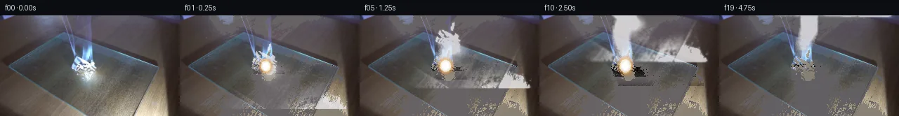

![首帧]()

Round 00
2026-11-06T05:37:05.855774+00:00像素候选变化代码 +569/−0inspection 更新
pixels 1ebc8101d7349846 · code af266d64eb34071b
查看本轮 generate.py 真实 diff
--- previous/generate.py
+++ current/generate.py
@@ -0,0 +1,569 @@
+#!/usr/bin/env python3
+"""generate.py — PixelWorld-Text frame generator for burning paper on glass board.
+
+Generates 20 RGB frames (256×144) at 4 fps showing a folded paper burning on a
+glass cutting board with white smoke emission. Frame 00 matches first_frame.png
+exactly; frames 01–19 animate fire flicker, smoke advection, and paper consumption.
+
+Methods used:
+ - Frame 0: direct copy of first_frame.png
+ - Flame: region-based brightness/noise perturbation with Gaussian flicker kernel
+ - Smoke: density-field advection with source injection, diffusion, and decay
+ - Paper consumption: progressive darkening burn-front advancing downward
+ - Compositing: alpha blending of smoke over background with flame-on-paper rendering
+"""
+
+import numpy as np
+from PIL import Image, ImageFilter
+from pathlib import Path
+import os, sys
+
+# ── Paths ──────────────────────────────────────────────────────────────────
+CASE_DIR = Path(os.path.dirname(os.path.abspath(__file__)) or ".")
+FIRST_FRAME = CASE_DIR / "first_frame.png"
+TMP_DIR = CASE_DIR / ".tmp"
+TMP_DIR.mkdir(exist_ok=True)
+
+H, W = 144, 256
+N_FRAMES = 20
+
+# ── Load first frame ───────────────────────────────────────────────────────
+first = np.array(Image.open(FIRST_FRAME)).astype(np.float64)
+assert first.shape == (H, W, 3), f"Expected (144,256,3), got {first.shape}"
+
+
+# ═══════════════════════════════════════════════════════════════════════════
+# SCENE ANALYSIS — Identify regions from frame 0
+# ═══════════════════════════════════════════════════════════════════════════
+
+def analyze_scene(frame):
+ """Extract masks and regions from the first frame."""
+ r, g, b = frame[:, :, 0], frame[:, :, 1], frame[:, :, 2]
+ brightness = frame.mean(axis=2)
+
+ # Flame core: very bright, white pixels
+ flame_core = (r > 240) & (g > 240) & (b > 240)
+
+ # Flame glow: bright warm area around the core (slightly yellow/white transition)
+ flame_glow = (brightness > 180) & (r > 170) & (g > 160) & (~flame_core)
+
+ # Smoke: gray-white pixels above the flame
+ # Smoke is lighter than background, not pure white, moderate brightness
+ smoke_mask = (
+ (brightness > 90) & (brightness < 245)
+ & (np.abs(r - g) < 30) & (np.abs(g - b) < 30) & (np.abs(r - b) < 30)
+ & (~flame_core) & (~flame_glow)
+ )
+
+ # Paper body: warm, bright region below the flame
+ # Paper is cream-colored, relatively bright
+ paper_mask = (
+ (brightness > 100) & (brightness < 240)
+ & (r > 100) & (g > 80)
+ & (r > g - 30) & (r < g + 40)
+ & (~flame_core) & (~flame_glow)
+ # Only below flame region
+ )
+
+ # Refine: paper is below y=70
+ y_grid, x_grid = np.mgrid[0:H, 0:W]
+ paper_mask = paper_mask & (y_grid >= 70)
+
+ # Static background: everything not flame, smoke, or paper
+ static_mask = ~(flame_core | flame_glow | smoke_mask | paper_mask)
+
+ return {
+ "flame_core": flame_core,
+ "flame_glow": flame_glow,
+ "smoke_mask": smoke_mask,
+ "paper_mask": paper_mask,
+ "static_mask": static_mask,
+ }
+
+
+masks = analyze_scene(first)
+
+# Flame region bounding box from core
+fc_coords = np.argwhere(masks["flame_core"])
… diff truncated; 482 more lines …